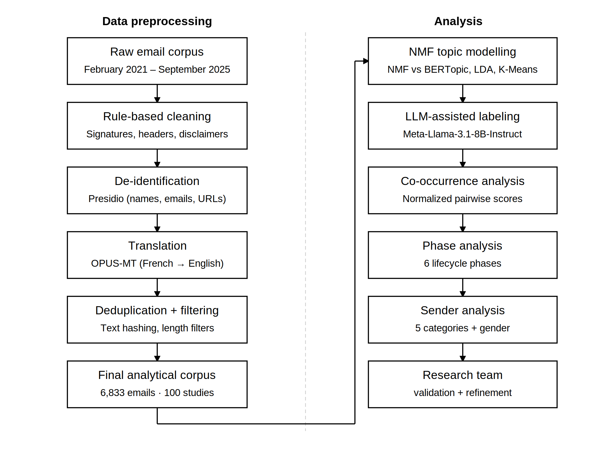
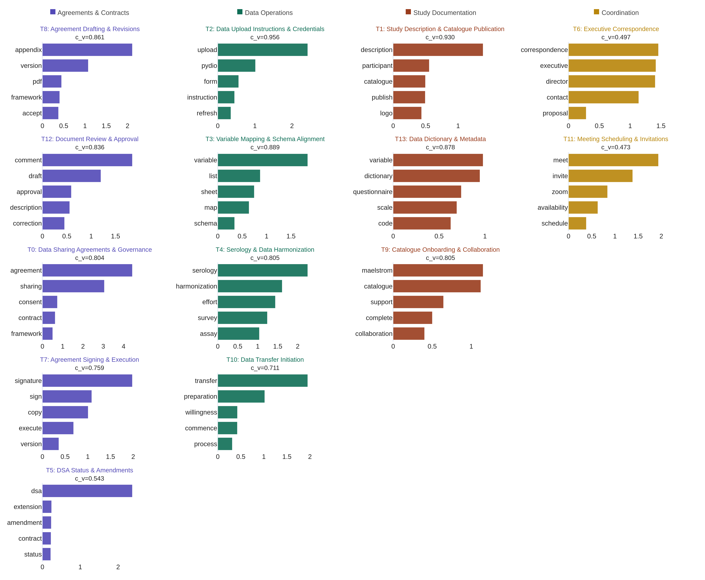
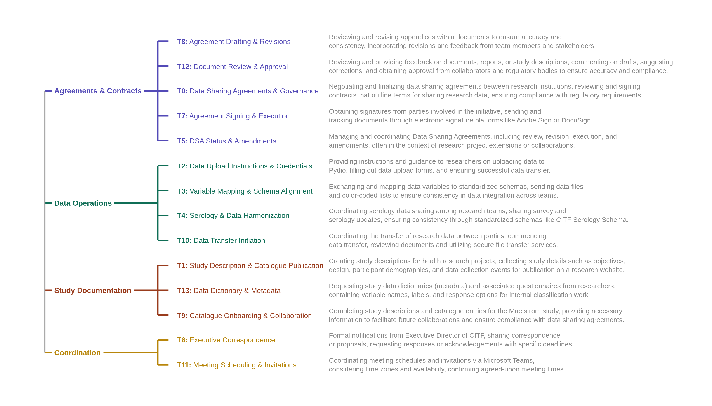
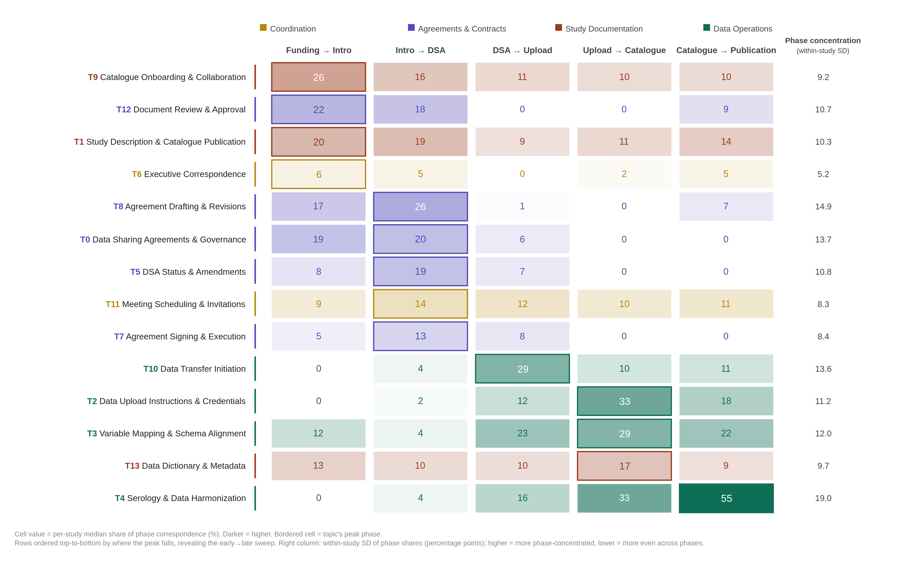
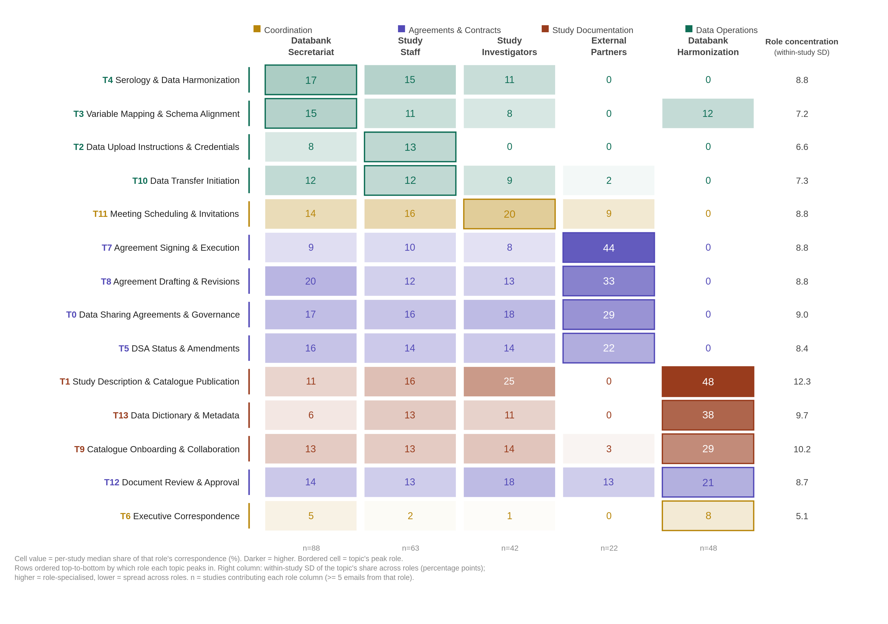
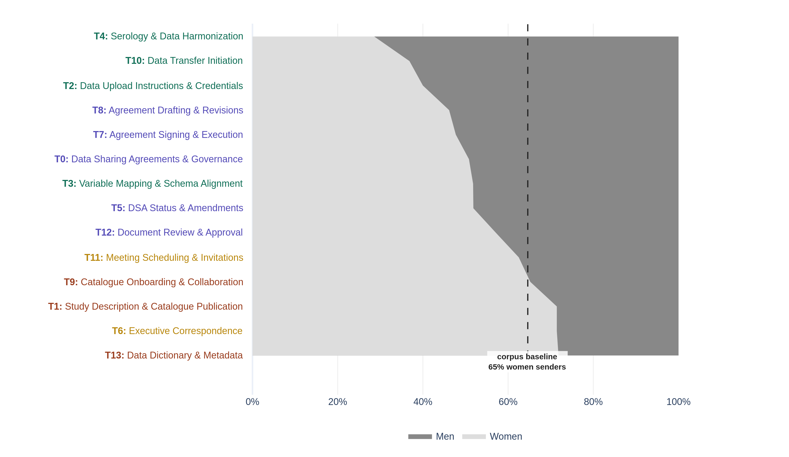
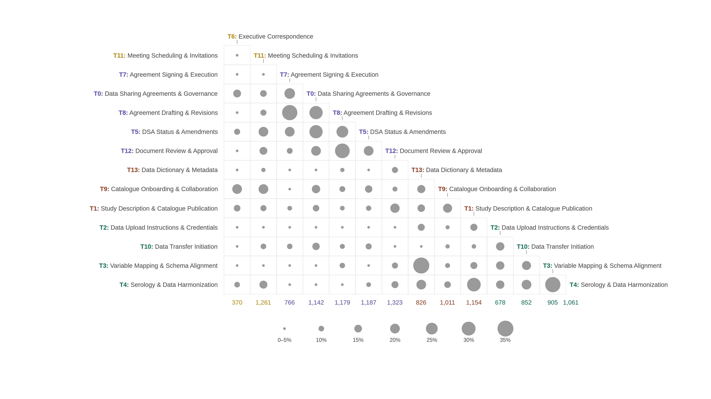

Revealing the administrative process of data sharing: LLM-assisted topic modelling of COVID-19 Immunity Task Force Databank operations
![]()
Background: Despite growing policy commitments to open data sharing, little empirical evidence exists on the day-to-day operational realities of coordinating large-scale health research data sharing. Understanding what this work actually involves is essential for designing realistic, equitable governance frameworks, and appropriately resourcing data-sharing operations.
Methods: This study analyzes 6,833 emails from the inbox of a central operations manager at the Canadian COVID-19 Immunity Task Force (CITF) Databank, covering 100 partnering studies and 491 unique senders (February 2021 to September 2025). After rule-based cleaning and automated de-identification, Non-negative Matrix Factorization (NMF) was applied for topic modeling (k = 14), with topic labels and thematic groupings generated using a locally deployed large language model (LLM). Topic distribution was analyzed across five lifecycle phases, five sender roles, and sender gender, and within-study topic co-occurrence was examined. All analyses report per-study medians to neutralize the influence of high-volume studies and senders.
Results: The 14 topics fell into four thematic categories: Agreements and Contracts, Data Operations, Study Documentation, and Coordination. Agreements topics peaked in early phases while Data Operations topics peaked progressively later, with Serology and Data Harmonization reaching a 55% median share in the final phase. Among studies reaching both bounding milestones, the negotiation phase (median 395 days) and data preparation phase (median 397 days) were the longest, while technical cataloguing took only 22 days. Sender roles showed distinct topical territories, with External Partners specializing in agreements, the Harmonization Group in study documentation, and the Secretariat serving as connective tissue across every workstream. Although women constituted 64.6% of senders, men were over-represented in Data Operations topics and women in Study Documentation topics, while Agreements topics sat closer to the sender baseline. Within-study co-occurrence revealed two largely separate clusters, with Agreements topics travelling together and Data Operations integrating with Study Documentation but rarely with Agreements.
Conclusions: Within this initiative, coordinating large-scale data sharing did not appear to be primarily technical work preceded by administrative setup, but rather the two proceeding in parallel across the entire lifecycle. These findings have direct implications for how research data infrastructure is resourced, governed, and staffed under national policy frameworks, particularly as institutions build capacity to meet federal research data management obligations.
topic modeling, research data sharing, data governance, COVID-19, Canada
Background
[1] Timely access to health research data is essential for evidence-informed public health decision-making, as demonstrated during the COVID-19 pandemic when the rapid aggregation of epidemiological data across institutions and jurisdictions was critical for coordinated response (Yehudi et al. 2025; Rigby et al. 2024). Despite growing policy commitments to open data, including federal research data management policies and national data infrastructure initiatives in Canada and elsewhere, recent reviews have identified fragmented data governance, inconsistent institutional practices, and insufficient workforce capacity as critical barriers to building national scientific data ecosystems (Chief Science Advisor of Canada 2025). These findings echo a decade of research on technical, motivational, legal, and ethical barriers to health data sharing (Panhuis et al. 2014; Casey, Li, and Berry 2016), though only a small fraction of that evidence is derived from empirical study of actual data sharing operations.
[2] Most of what we know about research data sharing comes from self-reported surveys and post-hoc reflections (Panhuis et al. 2014; Shabani and Borry 2016; Shabani, Thorogood, and Borry 2016). The actual day-to-day work of negotiating data sharing agreements, onboarding partner studies, and managing the technical and administrative dimensions of data transfer across institutions has rarely been observed directly. This gap is consequential, since stakeholders consistently underestimate the labour required to coordinate large-scale data sharing, and policymakers lack empirical grounding for decisions about how to staff, fund, and organize data sharing operations (Choroszewicz 2022; Casey, Li, and Berry 2016).
[3] Computational analysis of organizational correspondence offers a promising approach for studying coordination work as it actually unfolds. Topic modeling and related natural language processing techniques have been applied to email archives to characterize patterns of collaboration in large projects (Piccolo et al. 2018; Indig et al. 2023), and to health-related text data more broadly (Lossio-Ventura et al. 2021). Recent advances in combining non-negative matrix factorization (NMF) with large language model (LLM) assisted annotation have further improved the interpretability of topic modeling outputs (Wanna et al. 2024; Janssens, Bogaert, and Van den Poel 2025; Tan and D’Souza 2025).
[4] The Canadian COVID-19 Immunity Task Force (CITF) Databank offers a valuable opportunity to apply these methods to the study of health data sharing governance. Established in 2020 to coordinate serological and immunological research across Canada, the CITF Databank integrated over 150,000 health records from over 100 partnering studies spanning diverse institutional settings and geographic locations. The operational work of coordinating data sharing with all these studies was conducted largely through email correspondence managed by a central operations team, generating a primary record of data sharing coordination as it actually unfolded in real time.
[5] This study analyzes that correspondence using topic modeling to characterize the operational processes of research data sharing at scale. Specifically, we examine: (1) what Databank personnel and their collaborators communicated about in correspondence with the central coordinator, and how these topics were distributed across the data sharing lifecycle; (2) how coordination labour was distributed across different institutional roles and across gender; (3) how topics co-occurred within emails, and what their relationships indicate about workstream structure; and (4) what these distributions together reveal about the governance and administrative demands of coordinating large-scale data sharing in this initiative. The findings carry direct implications for how research data infrastructure is resourced and staffed, particularly as institutions develop capacity for ongoing administrative coordination alongside technical operations and prepare for future public health emergencies. Understanding the kinds, volume, and distribution of administrative labour involved is crucial for planning and appropriately resourcing data-sharing operations, so that this labour is recognized and supported rather than chronically underestimated.
Methods
Data Source and Preprocessing
[6] This study analyzes email correspondence generated during the operations of the Canadian COVID-19 Immunity Task Force (CITF) Databank, a pan-Canadian initiative that integrated individual-level health records from partnering studies conducted across Canada between 2020 and 2025. The analytical corpus comprises emails from the inbox of the central CITF Databank operations manager responsible for coordinating data sharing with all partnering studies. Emails span the period from February 2021 to September 2025.
[7] Emails were preprocessed using a multi-step pipeline to remove non-substantive content and protect participant privacy. Rule-based cleaning steps removed text automatically inserted by email providers, meeting-invite text, forwarded-message headers, and institutional email signatures. All messages were de-identified using Microsoft Presidio (Alrazihi, Biswas, and George 2025; Kotevski et al. 2022), an open-source framework for automated detection and anonymization of personally identifiable information, with personal names, email addresses, and URLs replaced with anonymized placeholders. Duplicate messages were removed within studies using normalized text hashing. Documents were filtered to retain only emails with non-missing sent dates and appropriate length, excluding near-empty or excessively long messages. The CITF Databank operated bilingually; bilingual messages were processed to retain English content where identifiable, and remaining French text was translated into English using OPUS-MT neural machine translation. This pipeline yielded a final analytical sample of 6,833 emails involving 491 unique senders across 100 studies (see Figure 1).

Data Analysis
[8] We evaluated four topic modeling approaches to identify the method best suited to this corpus: K-Means clustering, Latent Dirichlet Allocation (LDA), BERTopic, and Non-negative Matrix Factorization (NMF) (Murshed et al. 2023; Zubiaga 2024). Methods were compared at their peak coherence score (c_v) using standard English stopwords as a baseline. NMF outperformed all alternatives (c_v = 0.654), while K-Means produced an overly dominant cluster (50.8% of emails), LDA showed the lowest coherence (c_v = 0.517), and BERTopic assigned 32.3% of emails as outliers. Following additional domain-specific stopword curation and part-of-speech filtering, NMF performance improved across all values of k tested (k = 5 to 20). Although k = 5 achieved the highest coherence (c_v = 0.820), it produced only five broad topics with 35.6% of emails in the largest cluster. We selected k = 14 as the optimal balance between coherence (c_v = 0.768, NPMI = 0.170), granularity (lowest maximum cluster size at 10.7%), and topic diversity (0.914) (Rahimi et al. 2024).
[9] To facilitate interpretation of the 14 NMF topics, we used a locally deployed open-source large language model to generate topic labels, thematic groupings, and topic descriptions (Wanna et al. 2024; Janssens, Bogaert, and Van den Poel 2025; Tan and D’Souza 2025). Four open-source models were evaluated: Mistral-7B-Instruct-v0.3, Meta-Llama-3.1-8B-Instruct, Qwen2.5-7B-Instruct, and Gemma-2-9b-it, each receiving the top 5 keywords and 5 representative emails for all 14 topics simultaneously. Meta-Llama-3.1-8B-Instruct produced the most descriptive and semantically complete labels and was selected for subsequent steps. Using zero-shot prompts, the model was queried to: (1) generate 2–5 word topic labels from keywords and representative emails; (2) group labels into thematic categories; and (3) generate 2–3 sentence topic descriptions from keywords and up to 15 representative emails. Tasks were run across multiple temperature settings (0.0, 0.2, 0.4, 0.5, 0.7) and random seeds to ensure stability. All outputs were reviewed and refined by the research team to ensure face validity and alignment with domain knowledge. Local deployment ensured that no email data left secure servers at any stage of analysis.
[10] Email-to-topic assignments were based on a 15% probability threshold applied to the normalized NMF weight matrix. This threshold was selected to capture substantive secondary topic assignments while filtering out most tertiary contributions, and was validated through research team review of representative emails. Under this scheme, 27.3% of emails were assigned to a single topic, 47.6% to two topics, and 25.1% to three or more topics (mean = 2.01 topics per email).
[11] Across all four analyses (lifecycle phases, sender roles, gender, and topic co-occurrence), we report per-study median values rather than corpus-wide pooled values, to prevent high-volume studies and high-volume individual senders from dominating the across-study summary. For each analysis, the unit of replication is the study and the unit of analysis is the (study, attribute) cell, where attribute is the phase, role, gender, or topic pair being examined. Cells with fewer than five emails were excluded so that medians were not driven by one or two messages. The cell value computed within each (study, attribute) varies by analysis and is defined in the corresponding paragraphs below.
[12] To trace topic distribution across the data sharing lifecycle, each email was mapped to one of six sequential phases: Funding Start, Data Introduction, Data Sharing Agreement (DSA) Execution, Data Upload, Data Cataloguing, and Data Publication. Phase assignments were based on milestone dates recorded for each study. Seven studies were excluded from phase analysis due to non-sequential milestone dates, leaving 6,110 emails from 93 studies. For sender analysis, each email sender was classified into one of five categories based on their institutional role: Databank Secretariat, Study Staff, Study Investigators, External Partners, and Harmonization Group. A small residual “Other” category was excluded, leaving 6,789 emails from 100 studies.
[13] To examine the distribution of coordination labour by gender, sender first names were coded using a probabilistic approach combining the nomquamgender library (Van Buskirk, Clauset, and Larremore 2023) with manual corrections for ambiguous and non-Western names, achieving coverage of 95.8% of emails (6,545 of 6,833). Gender was classified as women or men; non-binary and gender-diverse identities are not captured by this method, which represents a limitation of the approach.
[14] Relationships between topics were investigated by computing normalized pairwise co-occurrence scores across all 14 topics (Stevenson et al. 2023). For each topic pair and each study, the co-occurrence score was calculated as the proportion of shared email assignments relative to the smaller of the two topics’ email counts within that study. Co-occurrence scores range from 0 (no co-occurrence) to 1 (complete overlap), with higher values indicating topics that are more likely to appear together within the same emails.
Results
[15] The analytical corpus comprises 6,833 emails from the inbox of the central CITF Databank coordinator, spanning correspondence with 100 participating studies from February 2021 to September 2025, involving 491 unique senders. NMF identified 14 topics organized into four thematic categories. The 14 topics, their five most characteristic terms, and their LLM-assisted labels are shown in Figure 2; the thematic groupings and topic descriptions are shown in Figure 3. The x-axis of Figure 2 reflects each term’s NMF component weight, a non-negative score indicating the strength of association between that term and the topic, derived from the factorization of the Term Frequency-Inverse Document Frequency (TF-IDF) matrix. Higher scores indicate terms that are more strongly and distinctively associated with that topic relative to others in the vocabulary.


[16] Topic coherence varied across the 14 topics, ranging from c_v = 0.473 to c_v = 0.956. The most coherent topics were those with highly distinctive technical vocabularies: Data Upload Instructions & Credentials (c_v = 0.956), Study Description & Catalogue Publication (c_v = 0.930), and Agreement Drafting & Revisions (c_v = 0.861). The least coherent topics, Meeting Scheduling & Invitations (c_v = 0.473) and Executive Correspondence (c_v = 0.497), reflect more generic coordination language that is less semantically distinctive, which is consistent with the broad, cross-cutting nature of these activities.
[17] The 14 topics were unevenly distributed across the four thematic categories. Five topics fell within the Agreements & Contracts theme, compared to only two within Coordination, reflecting the greater variety and specificity of tasks involved in contractual work relative to general coordination activities.
Topic Distribution Across Lifecycle Phases
[18] This analysis is based on 6,110 emails (89.4% of the full corpus) across 93 studies. From the full corpus we removed 7 studies with non-sequential milestone dates, then excluded emails sent before a study’s earliest milestone and after its publication milestone, leaving correspondence that falls within the project lifecycle. Emails were assigned to the phase in which they were sent, defined by consecutive project milestones, and the open-ended post-publication period was excluded, leaving five phases (Funding to Intro, Intro to DSA, DSA to Upload, Upload to Catalogue, Catalogue to Publication). For each study and phase we computed the share of that phase’s correspondence attributable to each topic, and reported the per-study median across studies. In Figure 4, each cell shows this per-study median share at a 15% topic-probability threshold, shaded white-to-color in proportion to its value, with a bordered cell marking each topic’s peak phase; rows are ordered top-to-bottom by peak phase, producing the early-to-late progression across the grid, and topics are colored by thematic category (Agreements and Contracts, Data Operations, Study Documentation, Coordination). To summarize how unevenly each topic was distributed across phases, we also computed, for each topic, the median across studies of the within-study standard deviation of its phase shares; higher values indicate topics whose correspondence concentrates in particular phases, and lower values indicate topics spread evenly across the lifecycle. These values appear in the rightmost column of Figure 4. Cells with fewer than five emails in a phase were omitted. The duration table (Table 1) is computed on the same 93-study sample using the same phase definitions, though its per-transition counts are smaller because a duration can only be measured for studies that reached both bounding milestones. All shares describe correspondence as observed from the Secretariat’s vantage point and should be read relative to this corpus rather than as absolute measures of project activity.

[19] Topic emphasis shifted systematically across the lifecycle, and the direction of that shift tracked thematic content (Figure 4). Agreements and Contracts topics were most prominent in the early phases. Agreement Drafting and Revisions (T8), Data Sharing Agreements and Governance (T0), DSA Status and Amendments (T5), and Agreement Signing and Execution (T7) all reached their highest per-study median share during Intro to DSA (26, 20, 19, and 13% respectively), while Document Review and Approval (T12) peaked one phase earlier, at Funding to Intro (22%). Data Operations topics became prominent progressively later and in sequence: Data Transfer Initiation (T10) was highest during DSA to Upload (29%), Variable Mapping and Schema Alignment (T3) and Data Upload Instructions and Credentials (T2) during Upload to Catalogue (29 and 33%), and Serology and Data Harmonization (T4) latest of all, reaching a median share of 55% during Catalogue to Publication, the highest per-study median of any topic in any phase.
[20] Topics differed not only in where they peaked but in how sharply, and this degree of phase-concentration was itself patterned by theme (rightmost column, Figure 4). The substantive and procedural topics were the most phase-concentrated, rising steeply in one or two phases and falling away elsewhere. Serology and Data Harmonization (T4) was the most concentrated of all (within-study SD of 19.0 percentage points), confined almost entirely to the final phase, followed by Agreement Drafting and Revisions (T8, 14.9) and Data Sharing Agreements and Governance (T0, 13.7), both confined to the negotiation phases. At the opposite extreme, the Coordination topics were nearly phase-invariant, maintaining a low-level presence across the entire lifecycle rather than peaking. Executive Correspondence (T6) held a median share near 5 to 6% across the early phases (SD 5.2, the lowest of any topic), and Meeting Scheduling and Invitations (T11) stayed close to 10 to 14% throughout (SD 8.3). This contrast is interpretable, since phase-concentrated topics correspond to discrete tasks tied to specific milestones, whereas the diffuse coordination topics reflect cross-cutting activities that recur whenever work is underway.
[21] Two further observations qualify the broad early-to-late shift. First, within Study Documentation the descriptive topics were prominent early while the more technical one was more evenly spread. Catalogue Onboarding and Collaboration (T9) and Study Description and Catalogue Publication (T1) were highest at Funding to Intro (26 and 20%), consistent with manual inspection showing that T9 captures the early correspondence through which studies are introduced to the Maelstrom catalogue rather than late-stage completion reminders, whereas Data Dictionary and Metadata (T13) remained relatively even across all five phases (median shares of 9 to 17%). Second, the Agreements and Contracts theme comprised four topics (T0, T5, T7, T8) that shared near-identical agreement-related subject lines but were separated by the model on the basis of email body content into distinct stages of the agreement lifecycle: establishing and governing the agreement (T0), drafting and revising it (T8), tracking its status and amendments (T5), and signing and executing it (T7). These topics co-occurred densely yet captured recognizably different correspondence, and Agreements concerns did not recede once formal agreements were executed; several retained appreciable median shares beyond the negotiation phases, suggesting that contractual and administrative attention persisted across the lifecycle rather than terminating at a single milestone.
[22] These communication patterns played out over uneven timescales (Table 1). Among studies that reached both bounding milestones, the negotiation phase (Intro to DSA) and the data preparation phase (DSA to Upload) had the longest median durations (395 and 397 days), while technical cataloguing (Upload to Catalogue) was much shorter (22 days). The phases in which agreements and data-operations correspondence concentrated were therefore also among the longest, so the thematic shift unfolded over extended periods of negotiation and preparation rather than at an even pace. Because durations are computed only for studies reaching both bounding milestones, later-phase estimates exclude studies that had not progressed that far and may understate typical times.
| Phase Transition | N Studies | Mean (days) | Median (days) | Min (days) | Max (days) |
|---|---|---|---|---|---|
| Funding → Intro | 83 | 212 | 190 | 7 | 670 |
| Intro → DSA | 59 | 454 | 395 | 7 | 1526 |
| DSA → Upload | 50 | 394 | 398 | 2 | 1184 |
| Upload → Catalogue | 46 | 68 | 22 | 0 | 421 |
| Catalogue → Publication | 29 | 664 | 753 | 245 | 1012 |
Topic Distribution Across Sender Roles
[23] This analysis is based on 6,789 emails (99.4% of the full corpus) across 100 studies and 488 unique senders, after dropping a residual “Other” category covering 44 emails from three senders not assignable to one of the five operational roles. Unlike the phase analysis, no milestone filter was applied, because sender role is independent of a study’s timeline. The five roles comprised the Databank Secretariat (3,624 emails from 36 senders, the central coordination and administrative staff responsible for managing day-to-day operations, tracking milestones, and overseeing agreements), Study Staff (1,567 emails from 274 senders, research coordinators and data managers handling preparation and upload), Study Investigators (609 emails from 111 senders, principal and co-investigators responsible for governance decisions), External Partners (527 emails from 73 senders, including Statistics Canada, legal counsel, and government agencies), and the Databank Harmonization Group (462 emails from 4 senders, the specialized research team responsible for variable mapping and ensuring interoperability). For each topic, we computed per-(study, role) the share of that role’s correspondence to a study that was attributable to the topic, and report the per-study median across studies. In Figure 5, each cell shows this per-study median share at a 15% topic-probability threshold, shaded white-to-color in proportion to its value, with a bordered cell marking each topic’s peak role; rows are ordered top-to-bottom by peak role, grouping topics under the role that owns them, and topics are colored by thematic category (Agreements and Contracts, Data Operations, Study Documentation, Coordination). To summarize how unevenly each topic was distributed across roles, we computed, for each topic, the median across studies of the within-study standard deviation of its role shares; higher values indicate topics concentrated in one or a few roles, lower values indicate topics distributed evenly across roles. These values appear in the rightmost column of Figure 5. Cells with fewer than five emails in a role were omitted. Per-study medians vary in their basis across roles. The Secretariat contributed substantive correspondence to 88 studies, Study Staff to 63, the Harmonization Group to 48, Study Investigators to 42, and External Partners to only 22, reflecting that the two specialist roles were substantive correspondents in only a subset of studies. These per-role study counts appear in the bottom row of Figure 5.

[24] The five sender roles exhibited markedly distinct topical profiles, with three roles owning recognizably different territory and two filling more general coordinating functions (Figure 5). External Partners were the most contractually specialized. In the 22 studies in which they were substantive correspondents, agreement-related topics dominated their mail, with Agreement Signing and Execution (T7) reaching a per-study median share of 44% (the highest contractual concentration of any role), and Agreement Drafting and Revisions (T8), Data Sharing Agreements and Governance (T0), and DSA Status and Amendments (T5) reaching 33, 29, and 22% respectively. External Partners were near-absent from Data Operations and Study Documentation topics, with median shares of zero for variable mapping, serology and data harmonization, and dictionary work. The Databank Harmonization Group was the most documentation-specialized. Among the 48 studies for which it was a substantive correspondent, Study Description and Catalogue Publication (T1) reached a per-study median share of 48% (the highest single value of any role on any topic), followed by Data Dictionary and Metadata (T13) at 38% and Catalogue Onboarding and Collaboration (T9) at 29%. The Harmonization Group was at or near zero for every Agreements topic and for most Data Operations topics, indicating a tightly scoped role focused on cataloguing and metadata curation. Study Staff anchored the technical data-operations workstream, peaking on Data Upload Instructions and Credentials (T2, 13%) and Data Transfer Initiation (T10, 13%), the two topics most closely tied to the mechanics of moving and ingesting data. Study Investigators peaked on Meeting Scheduling and Invitations (T11, 20%), consistent with their governance role being enacted largely through meetings rather than through direct contractual or technical correspondence.
[25] The Databank Secretariat presented the most distinctive pattern. It appeared as the median peak for only two topics, Serology and Data Harmonization (T4, 17%) and Variable Mapping and Schema Alignment (T3, 15%), and instead held moderate shares across virtually every topic in the grid, ranging from 5 to 20%. This breadth is consistent with the Secretariat’s central coordinating mandate. It functioned as connective tissue, present in every workstream rather than owning any single one. This broad presence should be interpreted with the data source in mind: because the corpus is drawn from a Secretariat coordinator’s inbox, the Secretariat appears in every workstream partly by construction, since an email enters the corpus only by passing through this role. The per-study median guards against the Secretariat’s volume dominating the topic shares, but it cannot show how broad the Secretariat’s reach would look from another vantage point. This distribution also exposes a substantive difference between the per-study median and the pooled share. Pooled across emails, the Secretariat appeared to dominate several agreement topics simply because a small number of Secretariat individuals were extremely high-volume correspondents in this inbox; but within a typical study, External Partners or the Harmonization Group held the highest per-study median share on the topics where they specialized. The per-study median therefore credits coordinated workstream concentration rather than absolute volume in the inbox.
[26] The within-study standard deviation column quantifies how unevenly each topic was distributed across roles (Figure 5, right). Three topics stood out as the most role-specialized, namely Study Description and Catalogue Publication (T1, SD = 12.3 percentage points), Catalogue Onboarding and Collaboration (T9, SD = 10.2), and Data Dictionary and Metadata (T13, SD = 9.7). All three are Study Documentation topics owned by the Harmonization Group, indicating that catalogue and metadata work was the most narrowly scoped activity in the corpus. At the opposite extreme, Executive Correspondence (T6) was the least role-specialized of all 14 topics (SD = 5.1), confirming its character as cross-cutting institutional communication rather than the work of any specific role. The four Agreements and Contracts topics showed intermediate concentration (SDs of 8.4 to 9.0), reflecting that although External Partners peaked highest on these topics, contractual work was nonetheless distributed across multiple roles (Secretariat, Investigators, and Staff all maintained appreciable shares) rather than being owned by external parties exclusively.
[27] The External Partner and Harmonization Group columns rest on smaller study counts (22 and 48 respectively) because these roles were substantive correspondents in only a subset of studies. A research-team review of these studies indicated that they differ structurally from the rest. Studies in which External Partners were substantive correspondents had substantially higher overall email volume than studies without such correspondence (median 90.5 versus 53.5 emails), though they were no more likely to reach publication or progress further through the lifecycle. External involvement was thus associated with higher-volume studies rather than with a particular outcome. Studies in which the Harmonization Group was a substantive correspondent had progressed further through the lifecycle, reaching more milestones and twice the publication rate of studies without such correspondence (40 versus 20%), consistent with harmonization being a late-stage activity. The same review showed that the two specialist roles served largely non-overlapping sets of studies. Only 9 studies had substantive correspondence from both External Partners and the Harmonization Group, while 39 studies had neither. This pattern suggests that specialist involvement arose through two largely separate channels, legal-contractual on the one hand and technical-harmonization on the other, rather than a single population of complex studies attracting all specialists.
Gender Distribution of Coordination Labour
[28] The gender analysis is based on 6,545 emails (95.8% of the full corpus) across 100 studies, after excluding senders whose gender could not be classified. Across the 455 unique gender-coded senders, women outnumbered men roughly two to one (294 women, 64.6%; 161 men, 35.4%). This imbalance was consistent at the study level. Of 100 studies, 70 had a majority-women sender base and only 18 had a majority-men sender base (median 60.0% women senders per study). The 64.6% women share of unique senders provides the corpus-wide baseline against which per-topic deviations should be read. A topic whose gender mix matches this baseline reflects the underlying composition of the sender base rather than a topic-specific gender pattern. Women sent a smaller share of emails than their headcount would imply (54.0% of gender-coded emails despite being 64.6% of senders), reflecting that women were on average lower-volume correspondents. We benchmark per-topic women-shares against the 64.6% sender baseline rather than the 54.0% email baseline so that deviations measure topic-level sorting relative to the available sender base, not differences in individual email volume.
[29] Individual breadth of involvement was nearly identical across genders. Both women and men engaged with a median of 5 distinct topics, and roughly half of each group (50.7% of women, 52.8% of men) engaged with five or more topics. A research-team review of multi-topic senders showed that the topics most frequently engaged with together were the same in both groups, involving combinations of Meeting Scheduling and Invitations (T11), Document Review and Approval (T12), and Catalogue Onboarding and Collaboration (T9). These topics, all of which sit near or at the corpus baseline in their gender distribution (Figure 6), functioned as the connective tissue of multi-topic coordination work. The gender differences visible in the corpus therefore reflect not whether women and men did multi-faceted coordination work, but which specific topics each group disproportionately handled.
[30] To make those topic-specific differences visible, we computed for each topic the per-study median share of its correspondence attributable to women. This framing lets each topic’s deviation from the 64.6% corpus baseline be read directly. Figure 6 displays these per-study medians at a 15% topic-probability threshold, sorted from most men-skewed at top to most women-skewed at bottom, with the corpus-wide women-share baseline (64.6%) shown as a dashed reference line. Bars are split into the women-share (light grey, left) and the complementary men-share (dark grey, right), with values summing to 100% of gender-coded correspondence on the topic. Per-topic values and the number of contributing studies (n = studies with ≥5 gender-coded emails on the topic) appear in the right margin, and topics are colored by thematic category (Agreements and Contracts, Data Operations, Study Documentation, Coordination). Cells with fewer than five gender-coded emails on a topic were omitted.

[31] The most striking signal in the figure is the cluster of men-skewed Data Operations topics at the top. Serology and Data Harmonization (T4) had a per-study median women-share of 28.6%, 36 percentage points below the corpus baseline and the largest gender deviation in the corpus. Data Transfer Initiation (T10) and Data Upload Instructions and Credentials (T2) followed at 36.8 and 40.0% women-share, 27.8 and 24.6 percentage points below baseline respectively. Variable Mapping and Schema Alignment (T3), the remaining Data Operations topic, sat at 51.8% (12.8 percentage points below baseline). The full Data Operations theme therefore tilted toward men, with every topic substantially below the corpus baseline and the most technical pipeline work (serology, data transfer, upload) the most strongly men-skewed.
[32] Agreements and Contracts topics sat closer to the corpus baseline than to either pole. Three of the five (T0 at 50.8%, T5 at 51.8%, and T12 at 57.1% women) were at or above 50% women, while Agreement Drafting and Revisions (T8) at 46.2% and Agreement Signing and Execution (T7) at 47.7% dipped modestly below. Deviations from baseline ranged from 7.5 to 18.5 percentage points below, substantially smaller than the 25 to 36 point deviations seen in the technical pipeline topics. The pooled email-level view obscured even this milder pattern by showing several of these topics as gender-balanced; the per-study median makes the modest skew visible, but contractual work was not strongly gendered in the way the technical pipeline work was.
[33] By contrast, women’s over-representation was concentrated in Study Documentation and was smaller in magnitude than men’s over-representation in the technical pipeline work. Data Dictionary and Metadata (T13) reached 71.8% women (7.2 percentage points above baseline), Study Description and Catalogue Publication (T1) reached 71.4% (6.8 above), and Executive Correspondence (T6) also reached 71.4% (6.8 above), though this last estimate rests on a smaller study count (n = 32) and the topic is also the least coherent in the NMF (c_v = 0.473), so its women-skew should be read cautiously. Catalogue Onboarding and Collaboration (T9) and Meeting Scheduling and Invitations (T11), the two remaining topics in the corpus, both sat at or near baseline (0.6 and -2.1 percentage points respectively) and represent activities for which gender mix matched the underlying sender-base composition.
[34] The overall pattern resolved into three tiers rather than two. Men were strongly over-represented in the technical pipeline work that moved data through the system (Data Operations topics, 25 to 36 percentage points below the women-majority baseline), women were over-represented in the documentation and metadata work that described it (Study Documentation topics, around 7 percentage points above baseline), and the contractual work that authorized the data sharing (Agreements and Contracts topics) sat closer to the sender baseline, with mild deviations spanning both sides of 50% women. The gender pattern therefore tracked a technical-versus-descriptive axis more cleanly than it tracked the agreements-versus-data-operations split visible in the phase, role, and co-occurrence analyses. These figures describe correspondents to a single coordinator’s inbox rather than the initiative’s workforce as a whole, and because the technical pipeline topics were anchored by Study Staff and the Harmonization Group, the men-skew of these topics may reflect the gender composition of the roles that handled them rather than gendered sorting of work within roles. Despite making up nearly two-thirds of the gender-coded sender base, women were under-represented among correspondents on the technical pipeline work and over-represented on the documentation and metadata work, a division consistent with prior research on the gendered division of professional work, including accounts of the feminization of coordination labour in research data infrastructure (Choroszewicz 2022), though the present data measure correspondence shares only and cannot speak to whether this work was recognized, credited, or valued.
Co-occurrence Analysis of Topic Relationships
[35] This analysis is based on the full corpus of 6,833 emails across 100 studies, examining how often pairs of topics were assigned to the same email within a study’s correspondence. For each topic pair and each study, we computed the co-occurrence score as the number of emails assigned to both topics divided by the smaller of the two topics’ total email counts in that study (Stevenson et al. 2023), and report the median across studies. In Figure 7, each cell shows this per-study median co-occurrence score at a 15% topic-probability threshold, with circle area proportional to the score and cells in the 0–5% range collapsed into a uniform small-circle bin so that low-coupling cells render as visible markers rather than disappearing entirely. Rows and columns are grouped by thematic category, with topics ordered within each theme by ascending email count, and topics are colored by thematic category (Agreements and Contracts, Data Operations, Study Documentation, Coordination). The bottom row reports the total emails per topic via multi-topic assignment.

[36] Within typical studies, two largely separate topical clusters emerged from the corpus, with limited coupling between them (Figure 7). The first comprised five Agreements and Contracts topics that travelled together within studies, with the highest within-cluster pairs being Agreement Signing and Execution × Agreement Drafting and Revisions (T7 × T8, 33.3%), Agreement Drafting and Revisions × Document Review and Approval (T8 × T12, 32.1%), Data Sharing Agreements and Governance × Agreement Drafting and Revisions (T0 × T8, 28.6%), Data Sharing Agreements and Governance × DSA Status and Amendments (T0 × T5, 28.6%), and DSA Status and Amendments × Agreement Drafting and Revisions (T5 × T8, 25.0%). Within a typical study’s correspondence, roughly a quarter to a third of emails on any one of these topics also touched another. The second cluster combined Data Operations with Study Documentation topics, with the highest pairs being Variable Mapping and Schema Alignment × Data Dictionary and Metadata (T3 × T13, 35.3%, the largest within-study coupling in the corpus), Variable Mapping and Schema Alignment × Serology and Data Harmonization (T3 × T4, 33.3%), Study Description and Catalogue Publication × Serology and Data Harmonization (T1 × T4, 29.5%), and Serology and Data Harmonization × Data Dictionary and Metadata (T4 × T13, 20.0%). The technical work of mapping variables, harmonizing serology data, documenting metadata, and describing studies for the catalogue therefore moved together within studies as a single integrated workstream that crossed the Data Operations and Study Documentation themes.
[37] The two clusters showed minimal within-study coupling with each other. Pairs spanning Agreements topics and Data Operations topics, or Agreements and Study Documentation, mostly fell in the 0–5% range (Figure 7), indicating that within a typical study, contractual work and technical data work did not regularly appear in the same emails. The pooled, corpus-level view of the same data suggested moderate cross-cluster coupling (5 to 12%) for many such pairs, but the per-study median shows that these apparent connections were diffuse cross-corpus artifacts rather than features of typical study workflows. This reading rests on the assumption that integration between the two workstreams, had it occurred, would have surfaced in correspondence reaching this coordinator; cross-workstream exchanges conducted between other parties, or outside email altogether, would not register as co-occurrence here. The Agreements cluster and the Data Operations and Study Documentation cluster were therefore parallel workstreams within the observed correspondence, paralleling the temporal sequencing observed in the phase analysis, the role specialization observed in the sender analysis, and the gendered division of labour observed in the gender analysis.
[38] The connectivity profile of individual topics, computed as the mean of each topic’s co-occurrence with the other thirteen across studies, revealed which activities were most and least integrated with the rest of the work. The most connected topic was Serology and Data Harmonization (T4, mean within-study co-occurrence 14.0%), reflecting that serology work involved coordinating with variable mapping, dictionary curation, and study description simultaneously. The least connected topic was Executive Correspondence (T6, 5.3%), which had appeared moderately connected in the pooled corpus-level view but proved to be a diffuse cross-cutting topic with little within-study integration. Data Upload Instructions and Credentials (T2, 6.8%) was similarly isolated, consistent with upload being a narrow technical task that occurred at one specific point in the lifecycle and was anchored by a specific role, as shown in the phase and sender analyses.
[39] The within-study coupling between Variable Mapping and Schema Alignment (T3) and Data Dictionary and Metadata (T13) was the strongest single coupling in the corpus and is worth noting separately. These two topics, despite belonging to different themes (Data Operations and Study Documentation), are connected by the workflow that links technical schema work to the descriptive metadata that documents it. A research-team review of T3 × T13 emails confirmed that this coupling reflects the parallel production of variable mappings and data dictionaries, since the same exchanges that established how variables would be harmonized produced the metadata describing them. This is a cross-theme integration that the theme structure obscures but the within-study coupling reveals.
Discussion
[40] This study analyzed 6,833 emails from the operational correspondence of the CITF Databank to characterize how large-scale health research data sharing was coordinated in one national initiative. The findings show that data sharing coordination involved substantial administrative and governance work alongside technical work, that coordination labour was differentiated systematically by lifecycle phase, by institutional role, and by within-study topic structure, with a further gender pattern carrying the same structure, and that the same two-workstream pattern emerged across the phase, role, and co-occurrence analyses.
[41] The phase, role, and co-occurrence analyses converged on a single structural finding, that agreements work and technical data work ran as parallel rather than integrated workstreams within studies. Agreements topics peaked in early lifecycle phases while Data Operations topics peaked progressively later, agreements work was anchored by External Partners while data work was anchored by Study Staff and the Harmonization Group, and within-study email co-occurrence showed agreements and data operations as two largely separate clusters with minimal cross-cluster coupling. The same structure was also patterned by gender, with men over-represented in the technical pipeline work that moved the data and women over-represented in the documentation and metadata work that described it. The fact that the same structural separation is visible temporally, by role, and by within-study topic co-occurrence, and is further patterned by gender, indicates that this is not an artifact of any single analytical choice, such as a particular threshold or grouping, but a consistent feature of the correspondence as it passed through this coordinator’s inbox. Because all four analyses draw on the same corpus from a single vantage point, however, they are not independent of one another, and this convergence cannot rule out patterns introduced by the data source itself; whether the same structure would be visible in the correspondence of other team members remains to be confirmed.
[42] The persistence of contractual and administrative concerns across all lifecycle phases, rather than being resolved early, suggests that conventional sequential framings of data sharing, in which agreements are finalized before technical work begins, did not describe how coordination unfolded in this initiative. Consistent with this, real-world data access governance involves multiple ongoing processes along the path from data collection to sharing rather than a single up-front authorization (Saulnier et al. 2019). Agreement-related topics retained appreciable median shares well beyond the negotiation phases, and the Data Upload and Data Cataloguing phases continued to surface contractual concerns alongside technical ones. Parallel onboarding strategies, in which technical preparation and agreement negotiation proceed simultaneously, could formalize this reality and potentially reduce overall timelines. More responsive and adaptive models for data sharing agreements, which can be amended as data requirements evolve rather than requiring full renegotiation, may also reduce the persistence of governance concerns in later phases (Casey, Li, and Berry 2016; Panhuis et al. 2014).
[43] The gender pattern was asymmetric and warrants particular attention. Although women constituted 64.6% of unique senders in the corpus, senders did not distribute evenly across topics. Men were strongly over-represented in the technical pipeline work that moved the data, with the most pipeline-technical topics deviating from baseline by 25 to 36 percentage points. Women were over-represented in the documentation and metadata work that described it, with magnitudes around 7 percentage points above baseline. Agreements and contractual work sat closer to the sender baseline, with mild deviations spanning both sides of 50% women. Because gender and role are intertwined in this corpus, the pattern may reflect who held the technical and documentation roles rather than gendered sorting of tasks within them, and the single-inbox source means it describes correspondence with one coordinator rather than the division of labour across the initiative. This pattern is nonetheless consistent with prior research on the gendered division of professional work, including the feminization of coordination labour in research data infrastructure (Choroszewicz 2022), although our data do not measure whether documentation and metadata work was recognized or credited, so we cannot characterize it as invisible labour on the basis of this corpus alone. Future initiatives should consider how coordination roles are defined, compensated, and credited, and whether existing structures inadvertently concentrate under-recognized labour among women and other underrepresented groups.
[44] These findings have direct implications for how research data sharing infrastructure is resourced and governed in Canada and beyond. Growing data sharing obligations under federal research data management policy will place increasing demands on university contracts offices and research administration teams, in a system already marked by insufficient workforce capacity (Chief Science Advisor of Canada 2025). Capacity to meet these demands may not easily scale, since contracts offices are often funded through fixed institutional overhead rates rather than in proportion to the volume of agreements requiring processing. Among studies that reached both bounding milestones, the negotiation phase alone had a median duration of 395 days, far exceeding the 22 days of technical cataloguing, though these estimates exclude studies that never reached the later milestone and the elapsed time within a phase reflects everything occurring in that window, not only the work the phase is named for. Even setting aside the lengthy data preparation phase, which was itself technical work from the studies’ perspective, the period spanning agreement negotiation was an order of magnitude longer than the technical cataloguing step. Policymakers and research administrators should account for this disparity when designing governance frameworks and allocating human resources for data sharing initiatives.
[45] This study has several limitations, concerning internal validity on the one hand and generalizability on the other.
[46] Regarding internal validity, the first limitation is that the corpus is drawn from a single coordinator’s inbox, which captures one perspective on the coordination process. This concern is partly mitigated by the centrality of the coordinator role to data sharing operations. The consistency of thematic patterns across lifecycle phases, sender roles, and within-study topic co-occurrence indicates that the findings are not artifacts of any single analytical choice, though because all analyses draw on the same corpus, this consistency cannot itself address the single-perspective limitation. Subsequent work will examine the relational structure of coordination using network analysis of full team correspondence. The second limitation is that the gender analysis relies on probabilistic coding of first names, which does not capture non-binary or gender-diverse identities and may misclassify names from non-Western cultural contexts. A research assistant manually verified and corrected the automated outcomes, which limits but does not eliminate this concern. In addition, gender and institutional role are confounded in this corpus, so observed gender-topic deviations cannot be attributed to gendered task allocation as distinct from the gender composition of roles; disentangling the two would require role-level staffing data. Future work could extend this through self-reported gender or richer identity capture in similar corpora.
[47] In terms of generalizability, the findings of this single case study reflect one organizational and institutional context. While the structural patterns identified here are likely generalizable to similar pan-Canadian data sharing initiatives, further research across other settings is needed to confirm this. Moreover, the study was conducted under the extraordinary pressures of the COVID-19 pandemic. The persistence of contractual concerns into the later phases is consistent with a setting in which data requirements evolved rapidly under pandemic conditions and new administrative obligations continued to surface as the science developed. A more slow-moving data-sharing setting, such as a chronic disease cohort study, might show a different profile, and replication in such settings would help establish which patterns are pandemic-specific and which generalize.
[48] Despite these limitations, the combination of NMF topic modeling with LLM-assisted annotation offers a replicable methodological approach that could be adapted to study coordination challenges in other domains of health systems management.
Conclusions
[49] As institutions across Canada and beyond face growing obligations to share research data, understanding what that work actually involves, and who bears its costs, is essential for designing governance frameworks that are both realistic and equitable. Three principal findings from this study stand out. First, agreements work and technical data work ran as parallel rather than integrated workstreams within studies, a structural separation visible temporally, by institutional role, and by within-study topic co-occurrence, with a further gender pattern carrying the same structure. Contractual concerns persisted across all lifecycle phases rather than being resolved early. Second, coordination labour was differentiated systematically by institutional role, with External Partners specializing in contractual work, the Databank Harmonization Group in study documentation, and the Databank Secretariat serving as connective tissue across every workstream visible in its correspondence. Third, among correspondents in this corpus, gender differences followed an asymmetric pattern in which men were over-represented in the technical pipeline work that moved the data, women were over-represented in the documentation and metadata work that described it, and agreements work sat closer to balance, consistent with broader evidence on the gendered division of professional work in research infrastructure. Among studies that reached both bounding milestones, the negotiation phase alone had a median duration of 395 days, far exceeding the 22 days of technical cataloguing. Even setting aside the lengthy data preparation phase, which was itself technical work from the studies’ perspective, the period spanning agreement negotiation lasted an order of magnitude longer than the technical cataloguing step. Taken together, these findings indicate that data sharing coordination involved substantial administrative and governance work alongside technical work in this initiative, and that sustaining it at scale concentrated demands on a small number of central staff, demands that existing funding and workforce planning frameworks may be poorly equipped to absorb.
References
List of Abbreviations
- CIHR
- Canadian Institutes of Health Research;
- CITF
- COVID-19 Immunity Task Force
- c_v
- topic coherence score
- DSA
- Data Sharing Agreement
- FAIR
- Findable, Accessible, Interoperable, Reusable
- LDA
- Latent Dirichlet Allocation
- LLM
- Large Language Model
- MCHI
- McGill Clinical and Health Informatics
- NMF
- Non-negative Matrix Factorization
- NPMI
- Normalized Pointwise Mutual Information
- SD
- Standard Deviation
- TF-IDF
- Term Frequency-Inverse Document Frequency
Ethics Approval and Consent to Participate
[50] This study analyzes administrative correspondence generated in the course of operational activities. All email data were de-identified prior to analysis using automated anonymization tools. The study was conducted in accordance with applicable institutional ethics guidelines. As this study involves analysis of administrative records rather than direct engagement with human participants, individual informed consent was not required.
Consent for Publication
Availability of Data and Materials
[51] The email corpus analyzed in this study contains sensitive institutional and administrative information and is not publicly available. De-identified topic model outputs, analytical code, and summary data underlying the figures and tables are available in the companion repository at https://github.com/zackbatist/CITF-emails. All code was developed using open-source tools and is archived following FAIR principles.
Competing Interests
[52] The authors declare no competing interests.
Funding
[53] This work was supported by the Canadian Institutes of Health Research (CIHR) operating grant held by David Buckeridge (2024–2027), which supports completion of the CITF Databank and related governance research. Zachary Batist is supported as a Postdoctoral Researcher within this grant.
Acknowledgements
[55] We thank the members of the CITF Databank team and all partnering study teams whose correspondence forms the basis of this analysis. We are grateful to the Canadian COVID-19 Immunity Task Force for supporting this meta-research program and for their commitment to reflexive examination of their own operations. We also thank the McGill Clinical and Health Informatics (MCHI) research group for providing computational infrastructure and administrative support.
[56] Claude (Sonnet 4.6) was used to assist with content organization, grammar checking, and improving overall clarity while drafting this manuscript. This tool contributed to the writing process by providing language suggestions and helping to structure the material more effectively.
Citation
@article{batist2026,
author = {Batist, Zachary and Ouellet, Melissa and Khezri, Sadun and
Murphy, Tanya and Noza, Aklil and Abbasgholizadeh-Rahimi, Samira and
Bourque, Guillaume and Buckeridge, David},
title = {Revealing the Administrative Process of Data Sharing:
{LLM-assisted} Topic Modelling of {COVID-19} {Immunity} {Task}
{Force} {Databank} Operations},
date = {2026-06-15},
url = {https://zackbatist.info/CITF-emails/topic-modelling/},
langid = {en},
abstract = {**Background:** Despite growing policy commitments to open
data sharing, little empirical evidence exists on the day-to-day
operational realities of coordinating large-scale health research
data sharing. Understanding what this work actually involves is
essential for designing realistic, equitable governance frameworks,
and appropriately resourcing data-sharing
operations.\textbackslash{} **Methods:** This study analyzes 6,833
emails from the inbox of a central operations manager at the
Canadian COVID-19 Immunity Task Force (CITF) Databank, covering 100
partnering studies and 491 unique senders (February 2021 to
September 2025). After rule-based cleaning and automated
de-identification, Non-negative Matrix Factorization (NMF) was
applied for topic modeling (k = 14), with topic labels and thematic
groupings generated using a locally deployed large language model
(LLM). Topic distribution was analyzed across five lifecycle phases,
five sender roles, and sender gender, and within-study topic
co-occurrence was examined. All analyses report per-study medians to
neutralize the influence of high-volume studies and
senders.\textbackslash{} **Results:** The 14 topics fell into four
thematic categories: Agreements and Contracts, Data Operations,
Study Documentation, and Coordination. Agreements topics peaked in
early phases while Data Operations topics peaked progressively
later, with Serology and Data Harmonization reaching a 55\% median
share in the final phase. Among studies reaching both bounding
milestones, the negotiation phase (median 395 days) and data
preparation phase (median 397 days) were the longest, while
technical cataloguing took only 22 days. Sender roles showed
distinct topical territories, with External Partners specializing in
agreements, the Harmonization Group in study documentation, and the
Secretariat serving as connective tissue across every workstream.
Although women constituted 64.6\% of senders, men were
over-represented in Data Operations topics and women in Study
Documentation topics, while Agreements topics sat closer to the
sender baseline. Within-study co-occurrence revealed two largely
separate clusters, with Agreements topics travelling together and
Data Operations integrating with Study Documentation but rarely with
Agreements.\textbackslash{} **Conclusions:** Within this initiative,
coordinating large-scale data sharing did not appear to be primarily
technical work preceded by administrative setup, but rather the two
proceeding in parallel across the entire lifecycle. These findings
have direct implications for how research data infrastructure is
resourced, governed, and staffed under national policy frameworks,
particularly as institutions build capacity to meet federal research
data management obligations.}
}